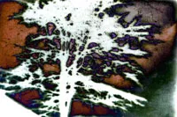
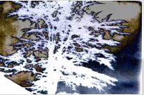

THE STORY


The Story
Súper-8, 16mm - 30' - Colombia, Francia - 2011
Directed by
Enrico Mandirola
It is through songs that people leave the sky of their childhood to enter into active life in the reign of civilization. It is through songs that they return to primitive life.
NOBODY DID ANYTHING
A Cinema-poem that was born out of road signs found scattered on the road.
The theme is a war, an opaque and archaic war that is never named.
The text is a chant about the behavior of a "timeless-man" during a war.
The film’s structure is drawn around the road signs found as fragments of a trip, as images stolen from our daily living.
The "writing on screen" is the object of the research.
The images were filmed during more than one decade of peregrinations throughout the roads of this planet, accompanied by a Super-8 camera.
The images are never a direct comment about the text; rather they will try to become moving in which we can place ourselves to listen to the voice of the chant.
A damaged LP vinyl that repeats itself?
The time and the rhythm are those of the repetition transported by the wind, as the text tells in its conclusion:
Now that you know this, try to protect yourself and save your head. If you cannot do it, at least, you will not be bored.
Screenings:
Torino Film Festival 2011 - Turin Italy
Signe de Nuits 2012 - Paris France